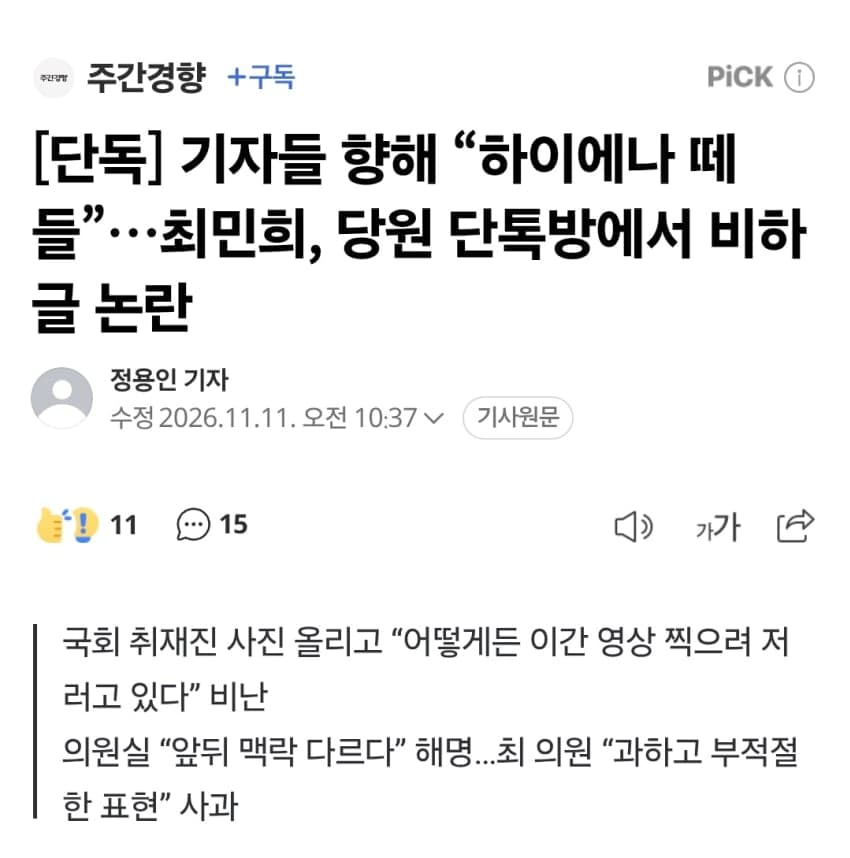
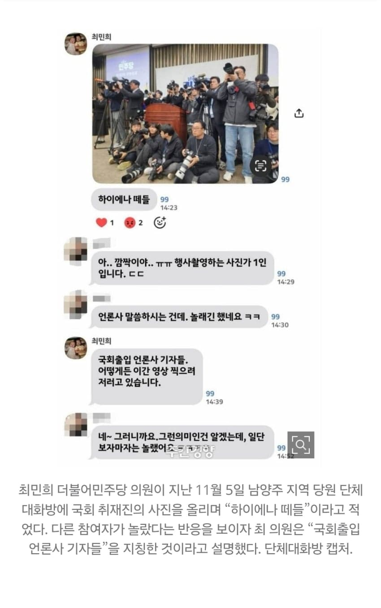
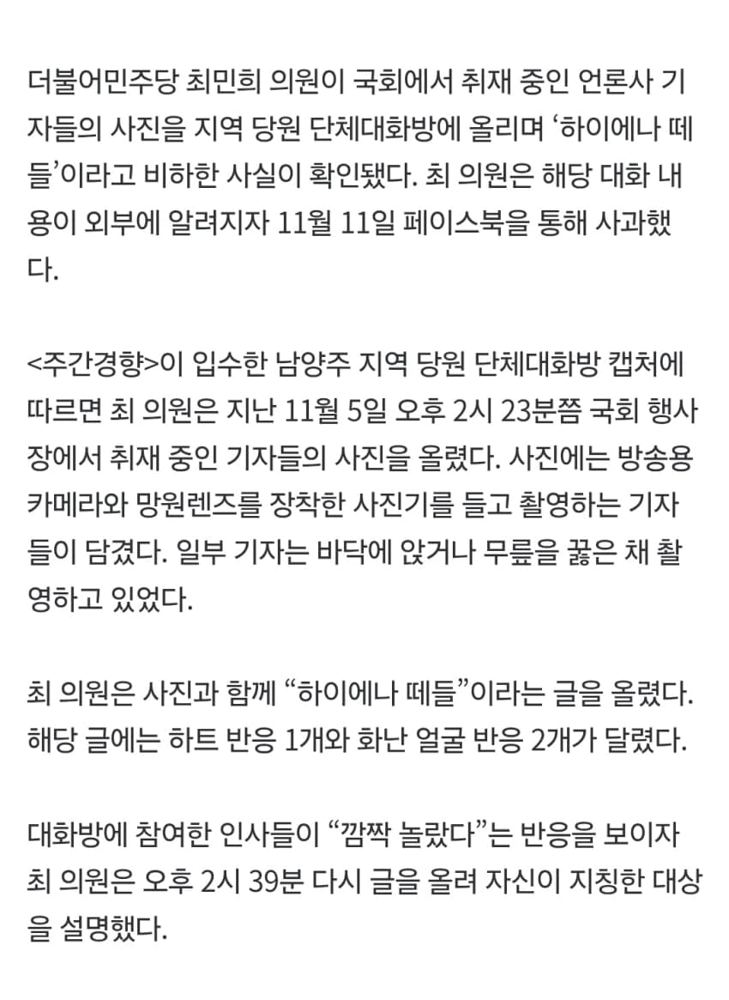
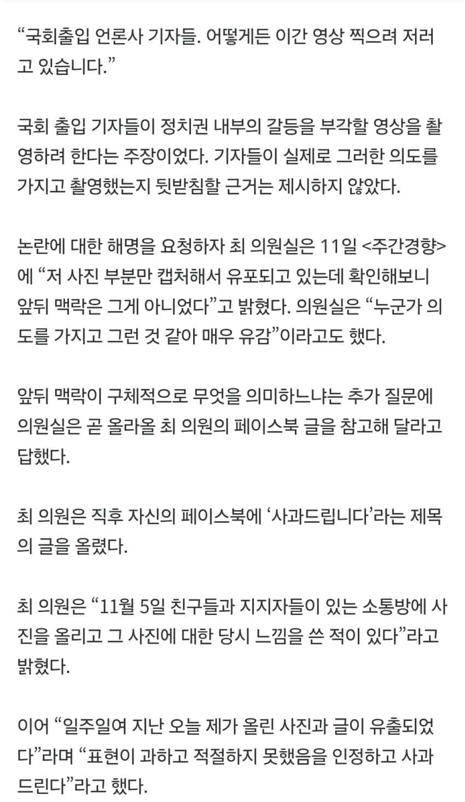
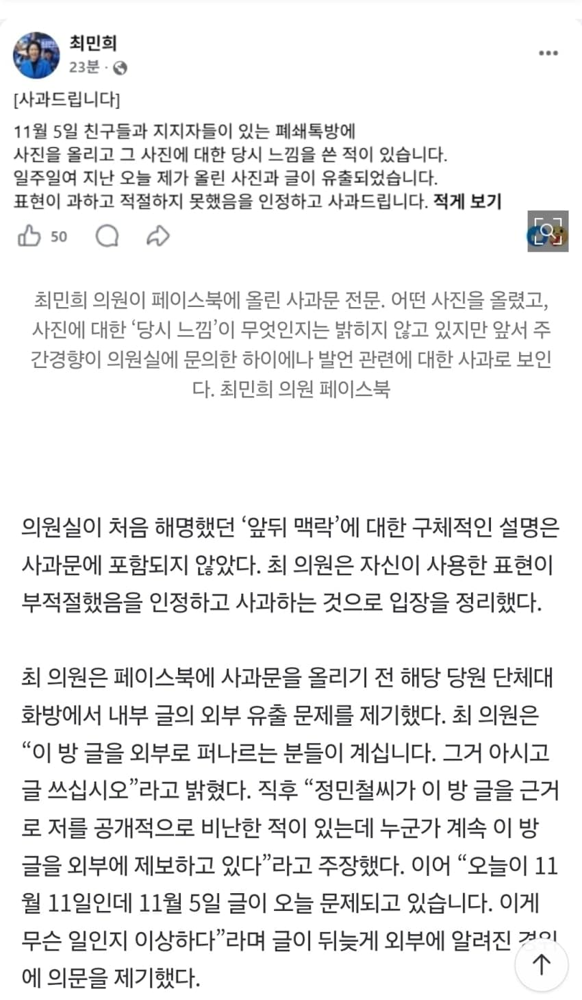
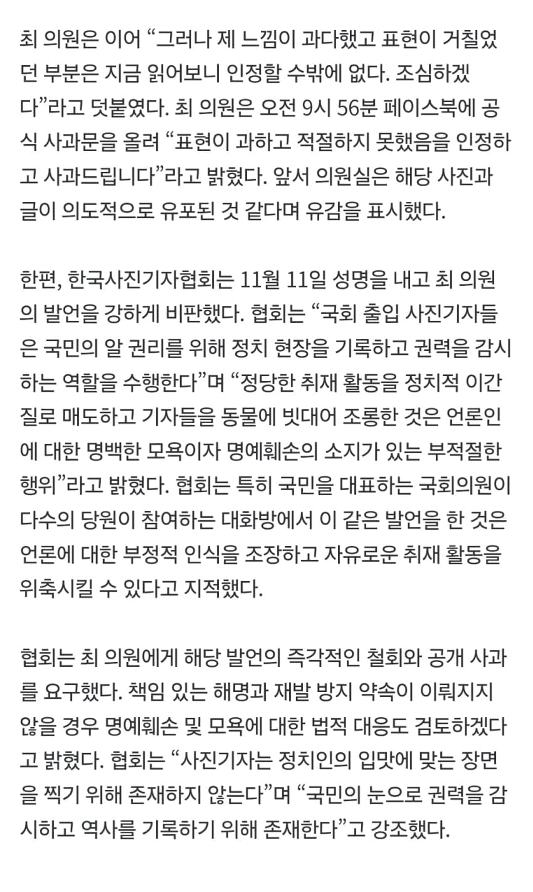

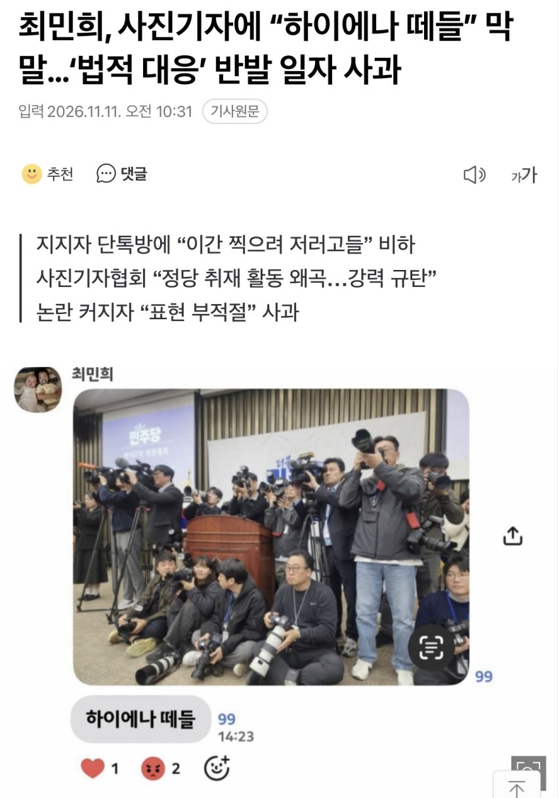
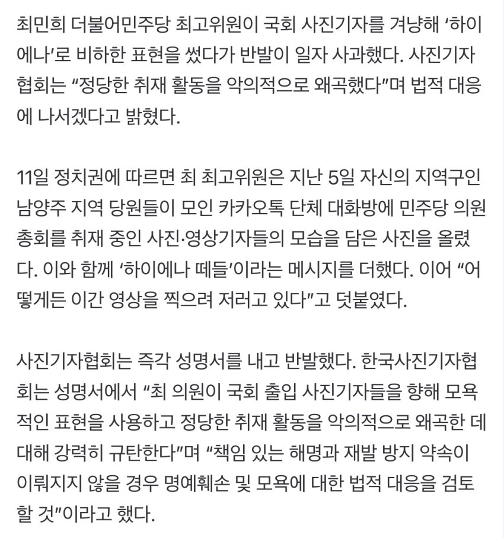

- 최민희, '하이에나 떼들' 댓글에 "표현 과했고 부적절했다"
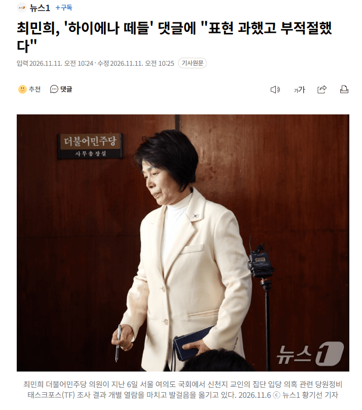
(서울=뉴스1) 박태훈 선임기자 = 최민희 더불어민주당 의원이 사진기자들에게 부적절한 표현을 했다며 사과했다.
최 의원은 11일 사회관계망서비스(SNS)에 '사과드린다'는 제목의 글에서 "11월 5일 친구들과 지지자들이 있는 소통방에 사진을 올리고 그 사진에 대한 당시 느낌을 쓴 적이 있다"며 지난 5일 민주당 의원총회장에서 사진 촬영을 위해 진을 치고 있던 사진기자들의 모습에 댓글을 단 적이 있다고 설명했다.
이어 "일주일가량 지난 오늘 제가 올린 사진과 글이 유출됐다"며 "표현이 과하고 적절하지 못했음을 인정하고 사과드린다"고 덧붙였다.
당시 최 의원은 사진기자들이 대기하고 있는 것을 찍은 사진에 '하이에나 떼들'이라는 댓글을 달았다.
https://n.news.naver.com/mnews/article/421/0009282722

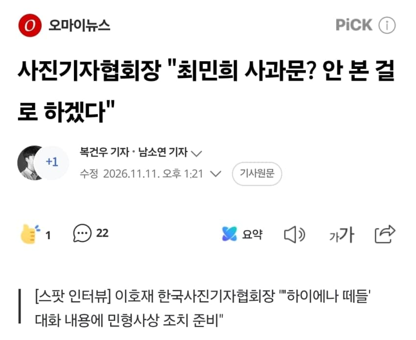
안아키 ㄹㅇ 좆됐노 ㅋㅋㅋㅋ 그동안 쌓였던게 드디어 폭발하는듯
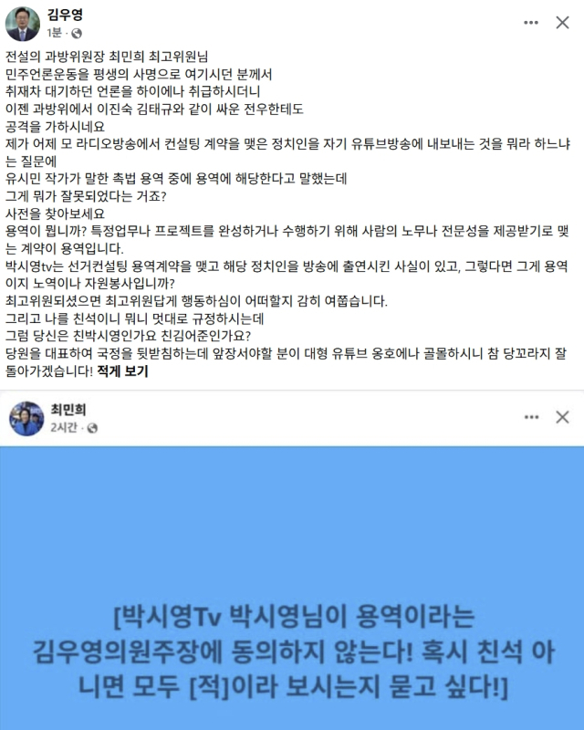
최민희는 진짜 너무 한심해
댓글
수집 당시 댓글 57개
땨뗘(봇) · 11.11 21:50:05
ㅇㅇ · 11.11 21:50:57
그정돈
아님;;
· ㅇㅇ · 11.11 21:52:05
그정도
맞음!!
· ㅇㅇ · 11.11 21:54:17
ㅇㅇ · 11.11 21:52:05
ㅇㅇ · 11.11 21:52:06
· ㅇㅇ · 11.11 21:53:18
민주내란당
· ㅇㅇ · 11.12 15:30:19
ㅇㅇ · 11.11 21:52:25
ㅇㅇ · 11.11 21:53:46
실베도로롱 · 11.11 21:54:57
· 실베도로롱 · 11.11 21:55:10
ㅇㅇ · 11.11 21:55:09
ㅇㅇ · 11.11 21:55:29
반건조
고릴라
· ㅇㅇ · 11.11 21:55:37
싸게
팝니다
ㅇㅇ · 11.11 21:56:05
ㅇㅇ · 11.11 21:57:17
ㅇㅇ · 11.11 21:59:31
천룡인이 불편하다는데 뭐가문제임?
ㅇㅇ · 11.11 22:01:10
방사거북 · 11.11 22:08:46
· 로어셰크 · 11.12 06:05:49
ㅇㅇ · 11.11 22:10:46
ㅇㅇ · 11.11 22:16:54
ㅇㅇ · 11.11 22:18:28
ㅇㅇ · 11.11 22:20:14
다섯가지자아 · 11.11 22:23:24
ㅇㅇ · 11.11 22:23:48
ㅇㅇ · 11.11 22:28:32
ㅇㅇ · 11.11 22:58:01
· ㅇㅇ · 11.11 22:58:20
ㅇㅇ · 11.11 23:05:39
ㅇㅇ · 11.11 23:10:55
ㅇㅇ · 11.11 23:13:05
ㅇㅇ · 11.11 23:14:41
ㅇㅇ · 11.11 23:18:35
ㅇㅇ · 11.11 23:53:51
ㅇㅇ · 11.12 00:03:20
ㅇㅇ · 11.12 00:09:22
ㅇㅇ · 11.12 00:10:38
환란 전 교회 휴거 · 11.12 00:17:49
ㅇㅇ · 11.12 00:34:32
ㅇㅇ · 11.12 00:59:25
· ㅇㅇ · 11.12 08:16:06
ㅇㅇ · 11.12 02:42:04
ㅇㅇ · 11.12 04:41:22
ㅇㅇ · 11.12 07:19:03
그냥 정신나간 개보지할카스년이잖아
ㅇㅇ · 11.12 08:10:15
ㅇㅇ · 11.12 09:41:52
ㅇㅇ · 11.12 09:51:32
ㅇㅇ · 11.12 10:19:05
ㅇㅇ · 11.12 10:20:20
hawaii50 · 11.12 10:53:54
ㅇㅇ · 11.12 11:38:05
ㅇㅇ · 11.12 11:49:34
ㅇㅇㅇ · 11.12 13:19:23
ㅇㅇㅇㅇ · 11.12 13:25:43
ㅇㅇ · 11.12 14:13:34